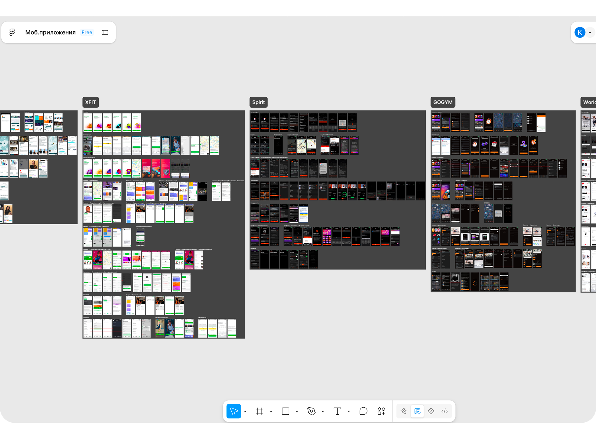
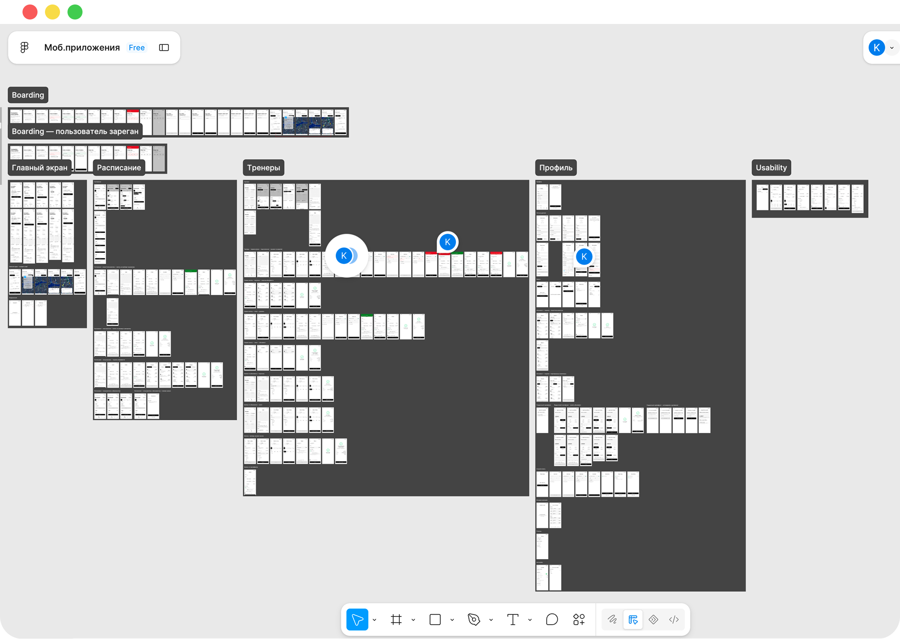
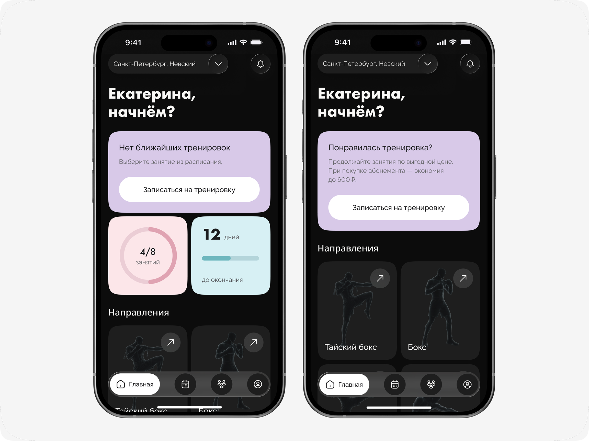
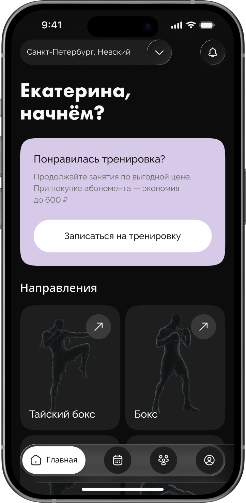
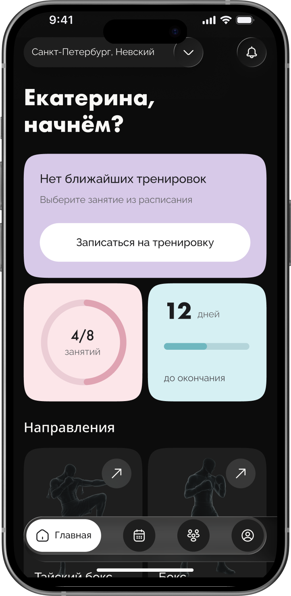
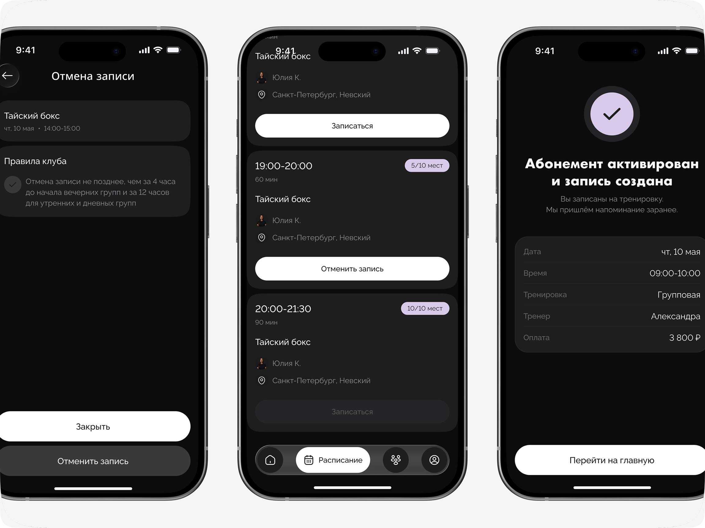

SC208: мобильное приложение клуба единоборств для записи
на тренировки
Спроектировала мобильное приложение клуба единоборств, в котором пользователь может самостоятельно записываться на тренировки, выбирать тренера, покупать и продлевать абонементы и управлять занятиями
Цель бизнеса
Сайт приводил клиентов, но дальше всё зависело от администратора
Проект стал продолжением редизайна сайта SC208, над которым я работала ранее
На сайте пользователь мог изучить направления, тренеров и расписание и оставить заявку. Но после этого основные процессы проходили вручную: запись и отмена тренировок, покупка и продление абонемента, проверка остатка занятий и оформление сертификатов требовали участия администратора
Из-за этого пользователям приходилось ждать ответа, а сотрудники клуба тратили время на повторяющиеся операции
Цель
Перенести ключевые сценарии взаимодействия с клубом в приложение и дать пользователю возможность управлять ими самостоятельно
Разложила ручные процессы на сценарии приложения
Опираясь на работу над сайтом SC208, определила основные действия, которые сейчас проходят через администратора, и перенесла их в self-service сценарии приложения
Прежде чем проектировать сценарии, я провела исследование: посмотрела, как устроены мобильные приложения фитнес-клубов, единоборств и смежных направлений. Мне важно было понять, какие процессы они уже перенесли в self-service, а где пользователь всё ещё вынужден обращаться к администратору или менеджеру
Для каждого конкурента я составила короткий пользовательский путь: от открытия приложения до целевого действия — записи на тренировку или покупки абонемента. Это помогло увидеть, где путь сокращается, а где, наоборот, возникают лишние шаги и ожидание ответа от клуба

Проверила ключевые сценарии до финального интерфейса
Собрала интерактивный прототип и провела usability-тестирование основных сценариев приложения, после этого подготовила финальный интерфейс

Как я решала задачи бизнеса
Одного главного экрана для всех оказалось недостаточно
Новый пользователь приходит, чтобы разобраться в клубе и записаться впервые. Пользователю без абонемента важна быстрая покупка, а действующему клиенту — ближайшая тренировка и остаток занятий
Гипотеза
Решение
Для нового пользователя предусмотрела онбординг с выбором клуба и записью на пробную тренировку
Пользователь с активным абонементом сразу видит ближайшую тренировку и остаток занятий для быстрой повторной записи, а пользователю без абонемента приложение предлагает перейти к покупке



Записаться можно двумя способами — через тренировку или тренера
Раньше пользователь мог посмотреть расписание на сайте, но выбрать конкретное занятие и записаться самостоятельно не мог
При этом ещё во время работы над сайтом стало понятно, что для части пользователей важной точкой выбора является конкретный тренер. Поэтому в приложении предусмотрела оба сценария
Гипотеза
Решение
Покупка абонемента стала частью пользовательского сценария
На сайте пользователь мог посмотреть тарифы, но для покупки всё равно требовалось оставить заявку. После оплаты не было места, где можно проверить остаток занятий или срок действия абонемента
Гипотеза
Решение
Сертификат тоже можно купить без обращения в клуб
Раньше пользователь оставлял заявку на сертификат и ждал, пока её обработает администратор
Перенесла этот сценарий в приложение: пользователь выбирает номинал, оформляет и оплачивает сертификат, а получатель активирует его в своём профиле с помощью кода
Гипотеза
Решение
Продумала не только happy path
Чтобы пользователю не приходилось обращаться к администратору при отклонении от основного сценария, проработала дополнительные состояния: отмену записи, отсутствие свободных мест и ситуацию, когда пользователь уже записан на тренировку
Решение

Результат после запуска
Приложение пока остаётся концептом, поэтому вместо выдуманных результатов заложила метрики, по которым можно проверить эффективность решений после запуска